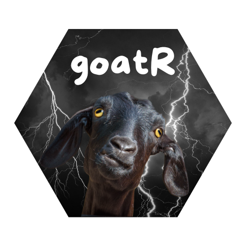

goatR 
Summary
The goatR package provides a comprehensive toolkit for working with meteorological data from Argentine weather stations. It includes functions to download, read, and analyze weather datasets, enabling users to efficiently handle meteorological information for research, analysis, and visualization purposes.
Key features of the package include:
Data Downloading: Easily download datasets from various Argentine weather stations using
download_datasets(). Specify a station ID to download data from a specific station or download all available datasets at once.Data Reading: Import downloaded datasets into R with
read_datasets(). This function allows reading data by station ID or from a specified file path, facilitating the integration of weather data into your workflow.-
Data Analysis:
-
Monthly Precipitation Plot: Visualize total monthly precipitation across multiple weather stations with
monthly_precipitation_plot(). This function aggregates precipitation data and creates a grouped bar chart, allowing customization of colors and titles. -
Monthly Temperature Plot: Generate line plots to visualize the monthly average temperature for multiple stations with
monthly_temperature_plot(). The function organizes data by month and allows custom color settings for each station. -
Temperature Summary Table: Summarize temperature data statistics for each station using
temperature_summary_table(). It provides statistics such as average, maximum, minimum, standard deviation, and the total number of days with data.
-
Monthly Precipitation Plot: Visualize total monthly precipitation across multiple weather stations with
The goatR package simplifies the process of obtaining and working with meteorological data, particularly for researchers, climatologists, and data enthusiasts interested in Argentine weather patterns. By streamlining data access and providing user-friendly functions, the package enables users to focus on analysis rather than data preparation.
Installation
# install.packages("pak")
pak::pak("bdirienzo/goatR")Getting help
If you encounter a bug or wish to request a new feature, please:
Check if the issue has already been reported in our issue tracker.
-
If not, please file an issue with a minimal reproducible example on GitHub:
A detailed description of the problem.
Steps to reproduce it.
A minimal reproducible example.
Information about your environment (R version, operating system, package version).
For questions and other discussion, please send us an email at:
We are committed to continually improving goatR and appreciate your feedback and participation.
Code of Conduct
Please note that the goatR project is released with a Contributor Code of Conduct. By contributing to this project, you agree to abide by its terms.